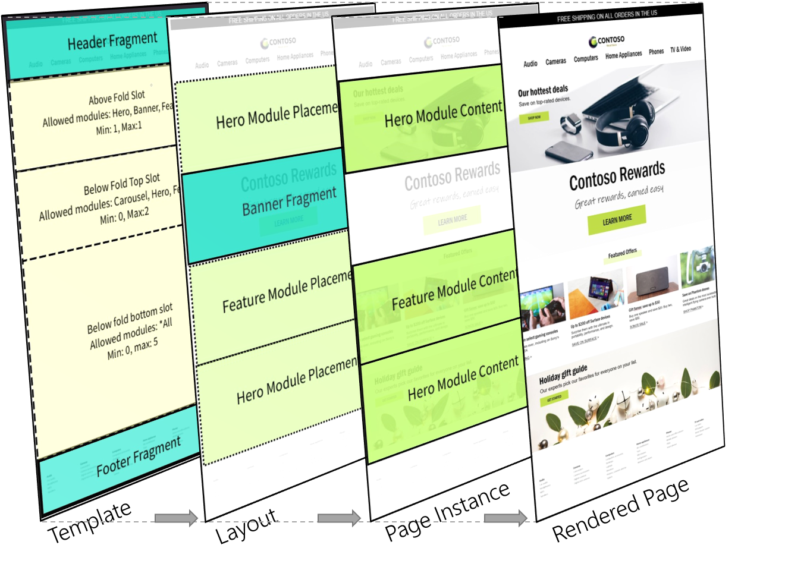

Templates and layouts overview
Templates are a foundational element of the Microsoft Dynamics 365 Commerce page model. If your goal is to maximize efficiency and consistency for site authoring workflows, it's important that you learn how to take advantages of templates for your website. Early decisions about template structure are important, and can significantly affect cost and agility for daily, seasonal, and site-wide brand updates. Well-structured templates have other benefits too. For example, they help improve site-wide search engine optimization (SEO) scores and minimize bug counts.
A good way to start to work with templates is to understand the functional benefits of templates and layouts, the differences between them, and the hierarchy.
The following illustration shows the page model hierarchy behind a rendered webpage.

| Entity | Basic function |
|---|---|
| Template | Templates define the module options and basic scaffolding for a set of layouts and page instances. |
| Layout | Layouts define the final selection and arrangement of modules for a page or a set of pages. |
| Page instance | Page instances define the data and content for specific pages. |
Templates
Templates are at the top of the Dynamics 365 Commerce page model hierarchy and represent an important early step for site configuration. Conceptually, templates help control consistency across a family of child layouts and pages by defining the base structure and authoring options for downstream layout creation and page creation workflows. Templates can help simplify the content authoring process through predefined, centrally managed elements (such as headers and footers) and guided authoring flows that help guarantee that module configuration choices are on-brand.
Controlling consistency
When you design a template, the biggest business decision that you must make is how much control the template should have over the page creation process. A template that leaves everything open for a downstream author is the easiest type of template to create, but it might have long-term consequences for the maintenance of pages that are created from it. A well-written template provides guidance and a streamlined authoring experience, but it also gives authors enough flexibility so that they can complete their task. All these aspects depend on the level of control that the template enforces.
Templates can help content authors be more efficient and stay on-brand in the following ways:
- Limit the modules that can be used on a page.
- Suggest default module and configuration choices.
- Explicitly make some module and configuration choices that are controlled at the template level. This process is also known as locking a setting.
The following example shows how a basic template (template X) can be configured:
- All child layouts of template X must have a header container, a body container, and a footer container.
- In template X, the configuration of the header container is locked and can be changed only in template X itself. All child layouts and pages always have this header.
- The body container requires at least one module and up to a maximum of ten modules. These modules are defined by downstream layouts and pages.
- For the body container, the hero, feature, carousel, and banner modules are available.
- A footer container is configured in template X, but it can be overridden by downstream layouts and pages.
The template in this example defines a simple structure and set of options for downstream content authors. Notice that some parts of a page (in this case, the header) are fully defined and locked in the template, and they can't be changed by downstream authors. Other parts (in this case, the body) can be defined by downstream authors within specific guidelines (in this case, a minimum number and maximum number of modules of specific types). And other parts (in this case, the footer) are defined in the template but can be overridden by downstream authors.
An important initial step for site and brand admins is to determine the correct balance between constraint and flexibility for child layout and page authors. When templates are used, this balance is completely configurable. It affects whether page elements are centrally updated (locked in the template) or left to individual child levels that are lower in the page hierarchy.
To start to use templates, Work with templates.
Layouts
Layouts are the next level in the page model hierarchy, below templates. Whereas a template defines all the modules that are allowed for a page, a layout is an explicit selection and arrangement of modules. Pages are the next level in the page model hierarchy, below layouts. They define the localized content for the modules that are selected in the layout.
The following example builds on the template example from the previous section, and shows how a basic layout can be configured:
The parent template of the layout requires that the body container have between one and ten modules. These modules can be only hero, feature, carousel, and banner modules. Therefore, the layout can define the following selection and arrangement of modules:
- The first module in the body container is a banner module, and it's followed by a hero module and two feature modules.
- The first feature module is left-aligned, and the second feature module is right-aligned.
Even though a default footer is inherited from the parent template, the template author left the footer unlocked. Therefore, the layout can override it by defining a different footer fragment.
The layout in this example defines the final arrangement of modules for child pages. Like a template, a layout can define default or locked module properties that will always be inherited by child pages (for example, the alignment of the feature modules). The actual content or data for every module in the layout is then defined farther down the hierarchy, in each child page instance. An important distinction here is that layouts don't directly contain localizable content, whereas their child pages do. The layout's primary function is to define the final arrangement and default configuration of modules for its child pages.
This hierarchy is powerful for two reasons. First, layouts that share the same parent template are treated as compatible for layout switching scenarios. Therefore, the layout for any page can be changed to another layout from the same template hierarchy without requiring that page-level content be reauthored. You can take advantage of this capability to do seasonal design updates, experiment, or do a permanent site redesign. Second, layouts provide another way to centrally modify shared elements for a group of pages without requiring updates to individual pages. For example, if a product category has 1,000 pages that share the same layout, the modules can be reordered in the layout, and this change will immediately be reflected in all 1,000 child pages.
By understanding this hierarchy, you can deliver an agile and efficient site structure that helps save cost, is scalable, and produces better results as the site evolves over time.
Preset and custom layouts
Layouts on your site can be either preset or custom:
- Preset layouts allow for a page creation workflow where all modules are already selected and arranged, and only data entry is required. This approach can help save time when many pages must be authored that have the same layout requirements. Preset layouts have a one-to-many relationship with their child pages. Therefore, a single preset layout can be used to centrally control the module arrangement for hundreds or thousands of child pages.
- Custom layouts are essentially single-use layouts that are embedded in one page. They aren't exposed as an option when other new pages are created or in layout switching scenarios. The benefit of this approach is that an author can experiment by authoring a page that uses a custom layout. Then, if the author wants to reuse the layout for other pages, it can easily be converted to a preset layout. The new preset layout is then exposed as an option in page creation workflows and in layout switching scenarios for pages from the same template hierarchy. Conversely, preset layouts can be branched into custom layouts. In this way, an author can break a page away from the preset layout and create a new single-use custom layout. (This new custom layout is still bound by any constraints in the parent template.)
Preset layout and custom layouts are edited in different parts of the authoring toolset. Because custom layouts have no dependencies on other pages, they are edited directly in the page editor. In this case, the existence of a layout is mostly transparent to the user and is exposed only in page-level properties and through the actions for layout options. However, because changes to preset layouts can affect many child pages, they must be edited in the layout editor, where publish actions consider the full downstream impact on child pages.
The following illustrations shows scenarios for preset and custom layouts.
To start to use preset layouts, see Work with preset layouts.